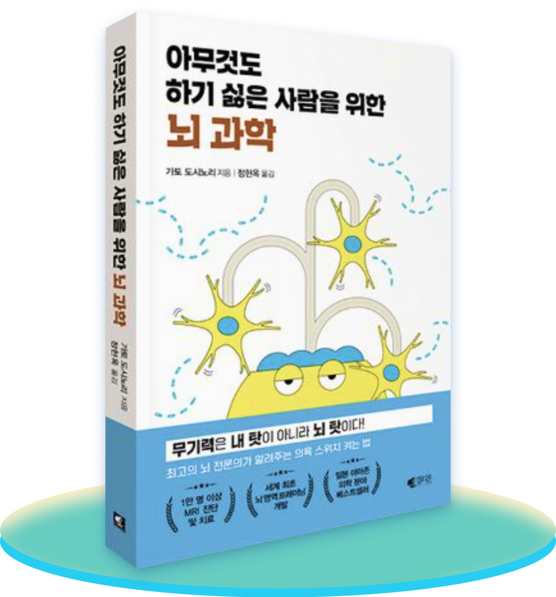
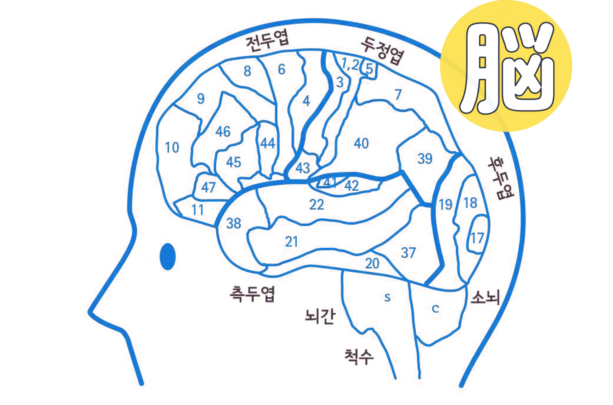
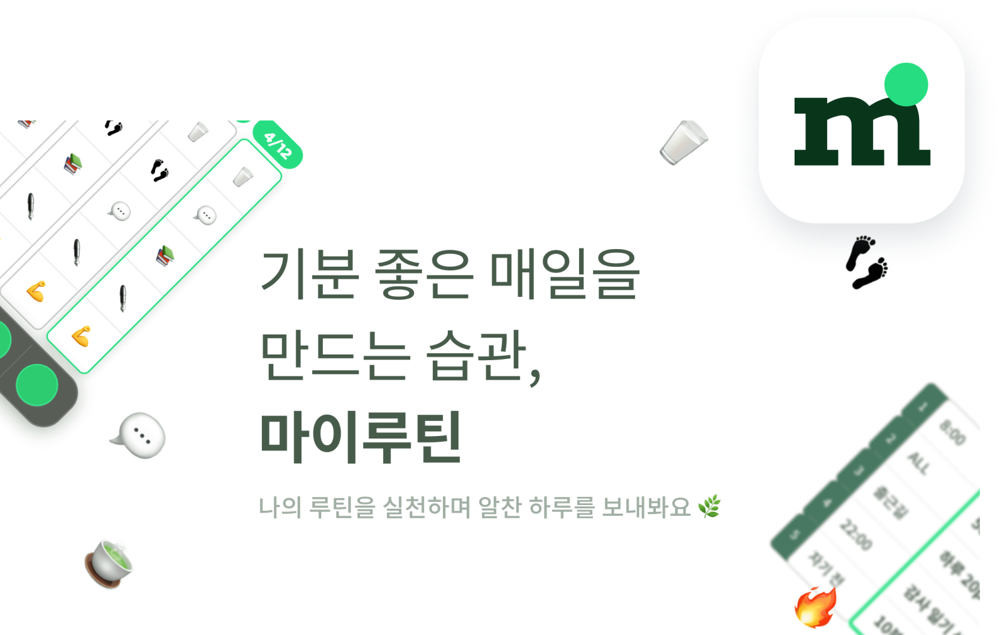

반쯤 감긴 눈꺼풀이 내려오는 데에 점점 가속도가 붙었다. 눈에 불끈 힘을
주어 핸드폰 상태바의 시계를 확인했다. 아, 이제 정말 자야 해. 사람이
하루에 7시간은 자야 한다던데, 아무리 계산을 해봤자 턱도 없다. 5시간
뒤면 출근을 해야 한다. 또 월요일이다.
나는 열심히 양치를 하면서도, 버스에 실려 사무실로 향하면서도 물에 젖은
솜이불처럼 축 쳐져서는 당췌 정신을 차릴 수가 없었다. 이번 달엔 빨간
날이 없네. 정말 이상하다. 일주일에 5일을 일하고 2일을 쉬다니, 말이 돼?
적어도 3일은 쉬어야겠는데. 직장인이라고 모두 무기력한 건 아닐 텐데 난
왜 이렇게 힘이 없을까. 출입카드를 찍고 엘레베이터에 탄 사람들을
훑어보며 입을 삐죽였다.
벌써 한 달이 다 됐다. 그동안 회사일에 그 어떤 흥미도 느끼지 못하고
있었다. 무언가 대박이 나서 일을 때려치우고 여행이나 다니면서 놀고
먹기만 하는 상상을 하는 게 제일 재밌었다. 그러던 중 이 책을 발견했다.
『아무것도 하기 싫은 사람을 위한 뇌 과학』이라니!
어쩌면 지금 내 무기력을 해결해줄 실마리를 찾을지도 모른다.

아무것도 하기 싫은 사람을 위한 뇌과학
- 출판사 : 갤리온

무기력은 내 탓이 아니라 뇌 탓
저자인 가토 도시노리는 일본 최고의 뇌 전문의이다. 작은 행동과 생활습관
개선을 통해 누구나 평생 뇌를 활성화시킬 수 있다고 말한다. 흔한
자기계발서적이나 에세이와는 달리, 뇌 전문의가 의학적 지식과 45년 간의
임상연구를 바탕으로 집필한 책이다. 이 책은 이런 사람들에게 도움이 될
것이다.
︎✓
집과 회사만 오가다 일주일을 그냥 흘려보낸다.
︎✓ 늦잠을 늘어지게 자고 해가 중천에 떠서야 일어난다.
︎✓ 모든 인간관계가 귀찮고 혼자 집에 있는 게 좋다.
︎✓ 딱히 취미도 없고 하루 종일 스마트폰만 주야장천
들여다본다.
︎✓ 금세 피곤해져서 무슨 일이든 오래 못 한다.
︎✓ 멍하니 있다 정신 차려 보면 해가 저물고 있다.
︎✓ 사람들과 대화하는 게 낯설고 두려워서 말을 버벅댄다.
︎✓ 강한 자극이나 대가 없이 몸과 머리가 반응하지 않는다.
︎✓ 늦잠을 늘어지게 자고 해가 중천에 떠서야 일어난다.
︎✓ 모든 인간관계가 귀찮고 혼자 집에 있는 게 좋다.
︎✓ 딱히 취미도 없고 하루 종일 스마트폰만 주야장천
들여다본다.
︎✓ 금세 피곤해져서 무슨 일이든 오래 못 한다.
︎✓ 멍하니 있다 정신 차려 보면 해가 저물고 있다.
︎✓ 사람들과 대화하는 게 낯설고 두려워서 말을 버벅댄다.
︎✓ 강한 자극이나 대가 없이 몸과 머리가 반응하지 않는다.
저자는 뇌는 한계가 없어서 노화와 관계없이 죽을 때까지 쓸수록
발달한다고 설명한다. 따라서 새로운 자극과 경험, 욕구, 흥미를 통해 뇌가
성장하는 환경을 만들어 줘야 의욕적이고 활기찬 삶의 에너지를 얻을 수
있다고 말한다.
"무기력은 의지의 문제가 아니라 뇌의 문제일 수 있다. 평소 잘못된
생활습관이 뇌 기능을 저하시켜 좀처럼 몸과 정신에 활력이 돌지 않는
것이다. 그 사실을 발견한 후 나는 만족스러운 하루를 위해 매일
의식적으로 뇌를 단련한다. 비록 지금은 아무것도 하고 싶지 않고 수시로
몸을 눕히고만 싶은 사람이라도 평소의 사소한 습관을 바꾸는 것만으로
충분히 활동적인 모습으로 거듭날 수 있다."
책에서는 정체되어 있는 뇌를 활성화시키는 방법에 대해 소개한다. 뇌의
영역과 인지행동에 관한 의학적 사실을 바탕으로 내용을 서술하고 있다는
점이 몹시 흥미롭다. 집중력 저하, 사고력 저하 등 여러 문제에 대한
원인과 해결법이 제시되어 있어 각자 필요한 경우에 따라 알맞게 적용할 수
있다.
이 책이 당신을 무기력의 늪에서
구원해 줄 것이라고 믿는다.
이 책이 당신을 무기력의 늪에서
구원해 줄 것이라고 믿는다.
Editior
혜영

작은 습관이 만들어내는 큰 변화,
나만의 루틴을 가꾸며 일상을 바꿔보세요.
나만의 루틴을 가꾸며 일상을 바꿔보세요.